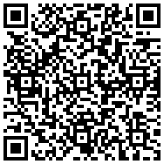

Jak můžete podpořit projekt Naděje?
Hlavní podporou projektu Naděje je sdílení. Film je vytvořen tak, aby byl dostupný pro všechny – mladé lidi, jejich rodiče i prarodiče. Každé sdílení pomáhá šířit důležité téma duševního zdraví a otevírá prostor pro otevřený dialog v rodinách, ve vztazích i mezi generacemi. Vaše sdílení může být prvním krokem k tomu, aby někdo, kdo se cítí sám, pocítil, že není. Pomozte nám šířit Naději a inspirovat lidi k porozumění a podpoře. Finanční podpora Je možnost projekt podpořit i finančně. Veškerý příjem je směrován propagaci projektu a práci na osvětě duševního zdraví.
